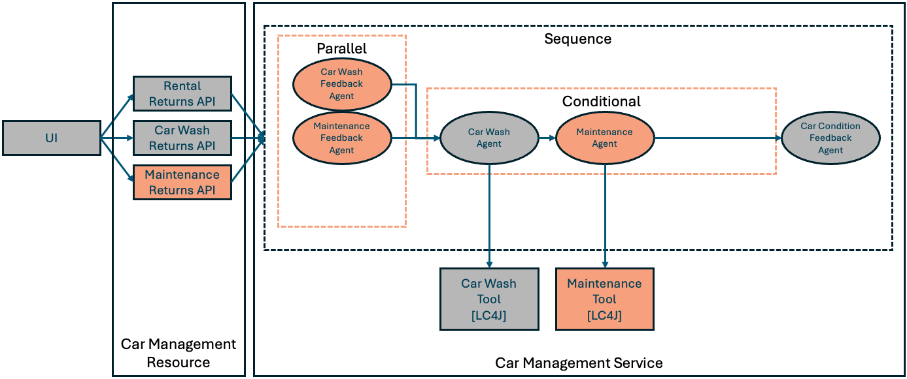

Step 03 - Building nested agent workflows
Expanding requirements
The Miles of Smiles management team has decided to get more serious about car maintenance. When cars are returned, the provided feedback should be analyzed — to see if car cleaning is needed and also to see if car maintenance is needed. If maintenance is needed then the car should be given to the maintenance team. If the car doesn’t need maintenance but does need cleaning then it should be given to the car wash team.
There are a number of things that we now need our car management app to handle:
- Car returns from rentals, the car wash, or the maintenance department
- Analyzing the return feedback to see if a car wash and/or maintenance are required
- Based on the feedback, getting the maintenance department to work on the car
- Based on the feedback, getting the car wash team to clean the car
- Automatically updating the car condition based on the analysis of the feedback
Nested Workflows
In the previous step, we used a sequence workflow, which ran the car wash agent followed by the car condition feedback agent. In this step, we will build a sequence workflow that contains a parallel workflow, a conditional workflow, and a single agent (see diagram below).
At each step in the workflow, the agentic framework checks the inputs needed by the next workflow or agent that needs to run. For the root of the workflow (in this case our sequence workflow), parameters are provided by the caller of the workflow interface. In subsequent steps within the workflow, the framework gathers values for input parameters from the AgenticScope. The output from each agent or workflow is added to the AgenticScope (using the agent’s outputName setting). The output from a workflow is typically the output of the last agent in the workflow. When building the agent/workflow, you can also specify an output method, which will be run after the response from the agent/workflow is created — this is particularly useful for parallel workflows, to customize what to fill into the corresponding outputName for that agent/workflow.
What are we going to build?

Starting from our app in step-02, we need to:
Add classes related to maintenance:
- Modify CarManagementResource to add a maintenance returns API
- Create a MaintenanceTool
- Create a MaintenanceAgent
Create new feedback agents:
- Create a MaintenanceFeedbackAgent
- Create a CarWashFeedbackAgent
Change the agents that previously processed the feedback to use the output from the feedback agents instead:
- Modify the CarWashAgent to use the output from the CarWashFeedbackAgent
- Modify the CarConditionFeedbackAgent to use the output from the feedback agents
Create our nested workflow:
- Create a parallel workflow, FeebackWorkflow, including the CarWashFeedbackAgent and MaintenanceFeedbackAgent
- Create a conditional workflow, ActionWorkflow, including the CarWashAgent and MaintenanceAgent
- Modify the sequence workflow, defined in the CarManagementService, to include the feedback workflow, the action workflow and the car condition feedback agent
- Modify the CarProcessingWorkflow to add the maintenance feedback
Before you begin
If you are continuing to build the app in the step-01 directory, start by copying some files (which don’t relate to the experience of building agentic AI apps) from step-03:
For Linux/macOS:
cd ./step-01
cp ../step-03/src/main/resources/static/css/styles.css ./src/main/resources/static/css/styles.css
cp ../step-03/src/main/resources/static/js/app.js ./src/main/resources/static/js/app.js
cp ../step-03/src/main/resources/templates/index.html ./src/main/resources/templates/index.html
cp ../step-03/src/main/java/com/carmanagement/service/CarService.java ./src/main/java/com/carmanagement/service/CarService.java
cp ../step-03/src/main/java/com/carmanagement/model/CarStatus.java ./src/main/java/com/carmanagement/model/CarStatus.java
For Windows:
cd .\step-01
copy ..\step-03\src\main\resources\static\css\styles.css .\src\main\resources\static\css\styles.css
copy ..\step-03\src\main\resources\static\js\app.js .\src\main\resources\static\js\app.js
copy ..\step-03\src\main\resources\templates\index.html .\src\main\resources\templates\index.html
copy ..\step-03\src\main\java\com\carmanagement\service\CarService.java .\src\main\java\com\carmanagement\service\CarService.java
copy ..\step-03\src\main\java\com\carmanagement\model\CarStatus.java .\src\main\java\com\carmanagement\model\CarStatus.java
Add classes related to maintenance
Modify the CarManagementResource to add a maintenance returns API
/**
* Process a car return from maintenance.
*
* @param carNumber The car number
* @param maintenanceFeedback Optional maintenance feedback
* @return Result of the processing
*/
@POST
@Path("/maintenance-return/{carNumber}")
public Response processMaintenanceReturn(
@PathParam("carNumber") Integer carNumber,
@QueryParam("maintenanceFeedback") String maintenanceFeedback) {
try {
String result = carManagementService.processCarReturn(carNumber, "", "", maintenanceFeedback);
return Response.ok(result).build();
} catch (Exception e) {
return Response.status(Response.Status.INTERNAL_SERVER_ERROR)
.entity("Error processing maintenance return: " + e.getMessage())
.build();
}
}
Create a MaintenanceTool
package com.carmanagement.agentic.tools;
import com.carmanagement.model.CarInfo;
import com.carmanagement.model.CarStatus;
import com.carmanagement.service.CarService;
import dev.langchain4j.agent.tool.Tool;
import jakarta.enterprise.context.Dependent;
import jakarta.inject.Inject;
/**
* Tool for requesting car maintenance operations.
*/
@Dependent
public class MaintenanceTool {
@Inject
CarService carService;
/**
* Requests maintenance for a car based on the provided parameters.
*
* @param carNumber The car number
* @param carMake The car make
* @param carModel The car model
* @param carYear The car year
* @param oilChange Whether to request an oil change
* @param tireRotation Whether to request tire rotation
* @param brakeService Whether to request brake service
* @param engineService Whether to request engine service
* @param transmissionService Whether to request transmission service
* @param requestText The maintenance request text
* @return A summary of the maintenance request
*/
@Tool("Requests maintenance with the specified options")
public String requestMaintenance(
Integer carNumber,
String carMake,
String carModel,
Integer carYear,
boolean oilChange,
boolean tireRotation,
boolean brakeService,
boolean engineService,
boolean transmissionService,
String requestText) {
// In a real implementation, this would make an API call to a maintenance service
// or update a database with the maintenance request
// Update car status to IN_MAINTENANCE
CarInfo carInfo = carService.getCarById(carNumber);
if (carInfo != null) {
carInfo.setStatus(CarStatus.IN_MAINTENANCE);
}
StringBuilder summary = new StringBuilder();
summary.append("Maintenance requested for ").append(carMake).append(" ")
.append(carModel).append(" (").append(carYear).append("), Car #")
.append(carNumber).append(":\n");
if (oilChange) {
summary.append("- Oil change\n");
}
if (tireRotation) {
summary.append("- Tire rotation\n");
}
if (brakeService) {
summary.append("- Brake service\n");
}
if (engineService) {
summary.append("- Engine service\n");
}
if (transmissionService) {
summary.append("- Transmission service\n");
}
if (requestText != null && !requestText.isEmpty()) {
summary.append("Additional notes: ").append(requestText);
}
String result = summary.toString();
System.out.println("MaintenanceTool result: " + result);
return result;
}
}
Similar to the CarWashTool, the MaintenanceTool can be used by the MaintenanceAgent to select maintenance options. If this was a real scenario it would potentially update a database to formally check in a car for maintenance.
Create a MaintenanceAgent
package com.carmanagement.agentic.agents;
import dev.langchain4j.service.SystemMessage;
import dev.langchain4j.service.UserMessage;
import dev.langchain4j.service.V;
import dev.langchain4j.agentic.Agent;
/**
* Agent that determines what maintenance services to request.
*/
public interface MaintenanceAgent {
@SystemMessage("""
/nothink, Reasoning: low.
You handle intake for the car maintenance department of a car rental company.
It is your job to submit a request to the provided requestMaintenance function to take action on the maintenance request.
Be specific about what services are needed based on the maintenance request.
""")
@UserMessage("""
Car Information:
Make: {{carMake}}
Model: {{carModel}}
Year: {{carYear}}
Car Number: {{carNumber}}
Maintenance Request:
{{maintenanceRequest}}
""")
@Agent("Car maintenance specialist. Using car information and request, determines what maintenance services are needed.")
String processMaintenance(
@V("carMake") String carMake,
@V("carModel") String carModel,
@V("carYear") Integer carYear,
@V("carNumber") Integer carNumber,
@V("maintenanceRequest") String maintenanceRequest);
}
Similar to the CarWashAgent, the MaintenanceAgent interacts with the MaintenanceTool to request maintenance suggested by the MaintenanceFeedbackAgent.
Create new feedback agents
Create a MaintenanceFeedbackAgent
package com.carmanagement.agentic.agents;
import dev.langchain4j.service.SystemMessage;
import dev.langchain4j.service.UserMessage;
import dev.langchain4j.service.V;
import dev.langchain4j.agentic.Agent;
/**
* Agent that analyzes feedback to determine if maintenance is needed.
*/
public interface MaintenanceFeedbackAgent {
@SystemMessage("""
/nothink, Reasoning: low.
You are a car maintenance analyzer for a car rental company. Your job is to determine if a car needs maintenance based on feedback.
Analyze the feedback and car information to decide if maintenance is needed.
If the feedback mentions mechanical issues, strange noises, performance problems, or anything that suggests
the car needs maintenance, recommend appropriate maintenance.
Be specific about what type of maintenance is needed (oil change, tire rotation, brake service, engine service, transmission service).
If no service of any kind, repairs or maintenance are needed, respond with "MAINTENANCE_NOT_REQUIRED".
Include the reason for your choice but keep your response short.
""")
@UserMessage("""
Car Information:
Make: {{carMake}}
Model: {{carModel}}
Year: {{carYear}}
Previous Condition: {{carCondition}}
Feedback:
Rental Feedback: {{rentalFeedback}}
Car Wash Feedback: {{carWashFeedback}}
Maintenance Feedback: {{maintenanceFeedback}}
""")
@Agent("Car maintenance analyzer. Using feedback, determines if a car needs maintenance.")
String analyzeForMaintenance(
@V("carMake") String carMake,
@V("carModel") String carModel,
@V("carYear") Integer carYear,
@V("carNumber") Integer carNumber,
@V("carCondition") String carCondition,
@V("rentalFeedback") String rentalFeedback,
@V("carWashFeedback") String carWashFeedback,
@V("maintenanceFeedback") String maintenanceFeedback);
}
The MaintenanceFeedbackAgent analyzes the feedback from rental returns, car wash returns and maintenance returns and decides if maintenance is required on the car.
We ask the LLM to include MAINTENANCE_NOT_REQUIRED in its response if no maintenance is needed so that we can easily check for that string when we build our conditional agents.
Create a CarWashFeedbackAgent
package com.carmanagement.agentic.agents;
import dev.langchain4j.service.SystemMessage;
import dev.langchain4j.service.UserMessage;
import dev.langchain4j.service.V;
import dev.langchain4j.agentic.Agent;
/**
* Agent that analyzes feedback to determine if a car wash is needed.
*/
public interface CarWashFeedbackAgent {
@SystemMessage("""
/nothink, Reasoning: low.
You are a car wash analyzer for a car rental company. Your job is to determine if a car needs washing based on feedback.
Analyze the feedback and car information to decide if a car wash is needed.
If the feedback mentions dirt, mud, stains, or anything that suggests the car is dirty, recommend a car wash.
Be specific about what type of car wash is needed (exterior, interior, detailing, waxing).
If no interior or exterior car cleaning services are needed based on the feedback, respond with "CARWASH_NOT_REQUIRED".
Include the reason for your choice but keep your response short.
""")
@UserMessage("""
Car Information:
Make: {{carMake}}
Model: {{carModel}}
Year: {{carYear}}
Previous Condition: {{carCondition}}
Feedback:
Rental Feedback: {{rentalFeedback}}
Car Wash Feedback: {{carWashFeedback}}
Maintenance Feedback: {{maintenanceFeedback}}
""")
@Agent("Car wash analyzer. Using feedback, determines if a car wash is needed.")
String analyzeForCarWash(
@V("carMake") String carMake,
@V("carModel") String carModel,
@V("carYear") Integer carYear,
@V("carNumber") Integer carNumber,
@V("carCondition") String carCondition,
@V("rentalFeedback") String rentalFeedback,
@V("carWashFeedback") String carWashFeedback,
@V("maintenanceFeedback") String maintenanceFeedback);
}
Same concept as the MaintenanceFeedbackAgent, except that it checks to see if any car cleaning is required and includes CARWASH_NOT_REQUIRED in its response otherwise.
Use the output from the feedback agents
Modify the CarWashAgent to use the output from the CarWashFeedbackAgent
package com.carmanagement.agentic.agents;
import dev.langchain4j.service.SystemMessage;
import dev.langchain4j.service.UserMessage;
import dev.langchain4j.service.V;
import dev.langchain4j.agentic.Agent;
/**
* Agent that determines what car wash services to request.
*/
public interface CarWashAgent {
@SystemMessage("""
/nothink, Reasoning: low.
You handle intake for the car wash department of a car rental company.
It is your job to submit a request to the provided requestCarWash function to take action on the request.
Be specific about what services are needed based on the car wash request.
If no specific car wash request is provided, request a standard exterior wash.
""")
@UserMessage("""
Car Information:
Make: {{carMake}}
Model: {{carModel}}
Year: {{carYear}}
Car Number: {{carNumber}}
Car Wash Request:
{{carWashRequest}}
""")
@Agent("Car wash specialist. Determines what car wash services are needed.")
String processCarWash(
@V("carMake") String carMake,
@V("carModel") String carModel,
@V("carYear") Integer carYear,
@V("carNumber") Integer carNumber,
@V("carWashRequest") String carWashRequest);
}
The CarWashAgent is no longer be responsible for interpreting feedback, so instead we modify it to rely on the output from the CarWashFeedbackAgent.
Modify the CarConditionFeedbackAgent to use the output from the feedback agents
@UserMessage("""
Car Information:
Make: {{carMake}}
Model: {{carModel}}
Year: {{carYear}}
Previous Condition: {{carCondition}}
Feedback from other agents:
Car Wash Recommendation: {{carWashRequest}}
Maintenance Recommendation: {{maintenanceRequest}}
""")
@Agent("Car condition analyzer. Determines the current condition of a car based on feedback.")
String analyzeForCondition(
@V("carMake") String carMake,
@V("carModel") String carModel,
@V("carYear") Integer carYear,
@V("carNumber") Integer carNumber,
@V("carCondition") String carCondition,
@V("carWashRequest") String carWashRequest,
@V("maintenanceRequest") String maintenanceRequest);
Similarly to the CarWashAgent and MaintenanceAgent, we will have the CarConditionFeedbackAgent rely on the output from the feedback agents rather than interpreting the returns feedback directly itself.
Modify the CarManagementService to create our nested workflow
Create a parallel workflow, FeebackWorkflow, including the CarWashFeedbackAgent and MaintenanceFeedbackAgent
package com.carmanagement.agentic.workflow;
import dev.langchain4j.agentic.Agent;
import dev.langchain4j.service.V;
/**
* Workflow for processing car feedback in parallel.
*/
public interface FeedbackWorkflow {
/**
* Runs multiple feedback agents in parallel to analyze different aspects of car feedback.
*/
@Agent
void analyzeFeedback(
@V("carMake") String carMake,
@V("carModel") String carModel,
@V("carYear") Integer carYear,
@V("carCondition") String carCondition,
@V("rentalFeedback") String rentalFeedback,
@V("carWashFeedback") String carWashFeedback,
@V("maintenanceFeedback") String maintenanceFeedback);
}
We need to analyze feedback from car returns both from the perspective of car cleanliness and needed repairs/maintenance. Since those are independent considerations we can do those analyses in parallel (to improve responsiveness of the overall workflow).
Create a conditional workflow, ActionWorkflow, including the CarWashAgent and MaintenanceAgent
package com.carmanagement.agentic.workflow;
import dev.langchain4j.agentic.Agent;
import dev.langchain4j.service.V;
/**
* Workflow for processing car actions conditionally.
*/
public interface ActionWorkflow {
/**
* Runs the appropriate action agent based on the feedback analysis.
*/
@Agent
String processAction(
@V("carMake") String carMake,
@V("carModel") String carModel,
@V("carYear") Integer carYear,
@V("carNumber") Integer carNumber,
@V("carCondition") String carCondition,
@V("carWashRequest") String carWashRequest,
@V("maintenanceRequest") String maintenanceRequest);
}
If there is maintenance required we want to send the car to get maintenance. If there is no maintenance required but there is car cleaning required we want to send the car to the car wash. To implement this we will use a conditional workflow. Conditional workflows are sequence workflows where each agent in the workflow is paired with a condition that must evaluate to true in order for the agent to be called (otherwise the agent is skipped).
Modify the sequence workflow, defined in the CarManagementService, to include the feedback workflow, the action workflow and the car condition feedback agent
// CarProcessingWorkflow
CarProcessingWorkflow carProcessingWorkflow = AgenticServices
.sequenceBuilder(CarProcessingWorkflow.class)
.subAgents(feedbackWorkflow, actionWorkflow, carConditionFeedbackAgent)
.outputName("carProcessingAgentResult")
.build();
Notice that the CarProcessingWorkflow is a nested workflow (workflows within workflows).
Modify the CarProcessingWorkflow to add the maintenance feedback
package com.carmanagement.agentic.workflow;
import dev.langchain4j.agentic.Agent;
import dev.langchain4j.agentic.scope.ResultWithAgenticScope;
import dev.langchain4j.service.V;
/**
* Workflow for processing car returns using a sequence of agents.
*/
public interface CarProcessingWorkflow {
/**
* Processes a car return by running feedback analysis and then appropriate actions.
*/
@Agent
ResultWithAgenticScope<String> processCarReturn(
@V("carMake") String carMake,
@V("carModel") String carModel,
@V("carYear") Integer carYear,
@V("carNumber") Integer carNumber,
@V("carCondition") String carCondition,
@V("rentalFeedback") String rentalFeedback,
@V("carWashFeedback") String carWashFeedback,
@V("maintenanceFeedback") String maintenanceFeedback);
}
Trying out the new workflow
In the Returns section of the UI you should now be able to see a Maintenance Return tab in the Returns section. This is where the Miles of Smiles maintenance team will enter their feedback when they are finished working on the car.
On the Maintenance Return tab, for car 3, enter feedback to indicate the scratch (mentioned in the car condition) has been fixed, but the car needs to be cleaned:
Once the request completes, you should see that the car’s status has been updated in the Fleet Status section.
Take a look at the logs. You should see that the car wash feedback agent and maintenance feedback agent both ran (in parallel, which may be evident from when the responses from those agents were logged). You should then see the car wash agent and car wash tool responses in the log (since there should now be no request for maintenance, but there should be a request for a car wash). Finally, you should see the response from the car condition feedback agent.